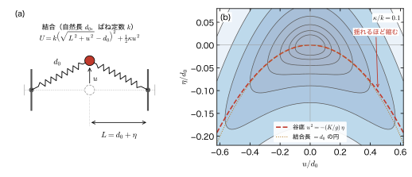
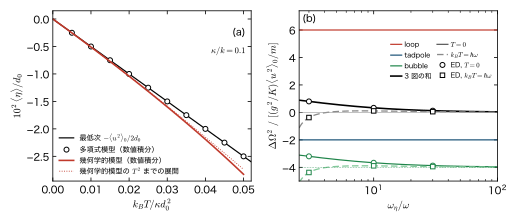

付録E負熱膨張はどの図に由来するか — 張力の模型
第14章では，熱膨張を tadpole の図の「尾」として読んだ．平均位置のずれが静的な線（松原振動数 $\omega_n=0$ の線）になり，その先の頂点を通して振動数をずらす，という読み方である．では，温めると縮む物質（負熱膨張）は，どの図のどの部品から来るのだろうか．
答えは短い．熱膨張そのものは，tadpole から外線と下の頂点を取り除いた「尾＋頂点＋輪」の1点の図であり，膨張か収縮かはその頂点の符号で決まる．本付録では，この一文を，手で最後まで計算できる最小の模型——調和的なばね2本と，その間で横に揺れる原子1個——で確かめる．ばねは完全に調和的なのに，幾何学だけから3次と4次の項が出て，模型は温めると縮む．
後半では，同じ模型で「縮むモードの振動数は温度でどう動くか」を，第14章の3つの図（loop・tadpole・bubble）で計算する．ここで，「体積を固定する」「歪みを止める」といった言葉が，図の上では違うものを指すことが分かる．すべての式は，厳密対角化と数値積分で確かめてある．
- 熱膨張は「尾（弾性定数の逆数）＋頂点（歪みとモードを結ぶ3次の力定数）＋輪（モードの熱ゆらぎ）」の1点の図であること．負熱膨張は頂点の符号が逆のモードが和を支配するときに起きること
- 1本の結合の伸び縮みだけでは必ず膨張すること．負熱膨張には結合に垂直な自由度（横揺れ）と，歪み $\eta$ と横揺れ $u$ を結ぶ3次の項 $\eta u^2$ が要ること
- 張力の模型 $U=k\bigl(\sqrt{L^2+u^2}-d_0\bigr)^2+\frac12\kappa u^2$．幾何学から $g\eta u^2$ と $\varphi u^4$ が出て，$\varphi=g^2/2K$ により完全平方になること
- 厳密な力のつり合い $K\braket{\hat\eta}+g\braket{\hat u^2}=0$，最低次の図，Mie–Grüneisen の形，古典極限の厳密解，幾何学的な模型の高次の補正
- 縮むモードの振動数のずれ：loop $+6$，tadpole $-2$，bubble $-4$（単位 $(g^2/K)\braket{\hat u^2}_0/m$，断熱極限）．「固定」の4つの意味と，それぞれに入る図
- 結晶での対応：熱膨張＝歪みを通る1点の図，準調和近似＝歪みを通る tadpole，体積一定＝loop＋bubble
E.1 熱膨張は「1点の図」である
E.1.1 tadpole から外線と下の頂点を取り除く
第14章14.6.2節の tadpole（図14.2(b)）は，下から順に「外線が入って出ていく頂点」「尾」「上の頂点」「頭の輪」でできていた．このうち外線と下の頂点を取り除くと，「尾＋上の頂点＋輪」が残る．これは外線を1本しかもたない図（1点の図）であり，平均位置 $\braket{\hat x}$ そのものを表す（第14章14.6.2節の平均位置の式 $\braket{\hat x}=3\xi\braket{\hat x^2}_0/m\omega^2$．14.8.2節の箱の最後の段落）．3つの部品の意味は次のとおりである．
- 輪：同じ頂点に戻る等時刻の縮約 $\braket{\hat A^2}_0=2n_B+1$．モードの熱ゆらぎと零点ゆらぎの大きさである．温度依存性はここからだけ入る．
- 頂点：「平均位置（歪み）1本」と「モード2本」を結ぶ3次の力定数．結晶では $\partial\omega_q^2/\partial\eta=-2\gamma_q\omega_q^2$ であり（第14章14.11.2節），モード Grüneisen 定数 $\gamma_q$ に比例する．歪みを加えたときに，そのモードが軟らかくなるか硬くなるかを表す．
- 尾：松原振動数 $\omega_n=0$ の線．頂点が及ぼす平均の力に対する静的な応答であり，一様な歪みでは弾性定数の逆数（体積弾性率×体積の逆数 $1/B_0V_0$）である．
言葉にすれば，「モードが熱で揺れる（輪）と，そのモードは歪みに平均の力を及ぼす（頂点）．その力に，格子が弾性的に応じる（尾）」．これが熱膨張である．尾は弾性定数の逆数なので正である．輪も正である（$2n_B+1>0$）．したがって平均の歪みの符号は頂点の符号だけで決まる．
E.1.2 全モードで足す
結晶では，輪の中を回るモード $q$ について和をとる．第14章14.11.2節の導出で見たように，圧力ゼロでの平衡条件から
$$ \begin{equation} \eta_{\rm th}(T) = \frac{1}{B_0V_0}\sum_q\gamma_q\,\hbar\omega_q\left(n_q+\frac12\right), \qquad \alpha = \frac{\dd\eta_{\rm th}}{\dd T} = \frac{1}{B_0V_0}\sum_q\gamma_q\,c_{V,q} \label{eq:E-alpha} \end{equation} $$である（$\eta$ は体積歪み，$c_{V,q}$ はモード $q$ の比熱，ここでは $\gamma_q\equiv\gamma^{\rm h}_q$）．式 \eqref{eq:E-alpha} の各項が，輪 $q$ の1点の図である．$\hbar\omega_q(n_q+\frac12)$ が輪（モードのエネルギー），$\gamma_q$ が頂点，$1/B_0V_0$ が尾である．
$c_{V,q}>0$，$B_0V_0>0$ だから，負熱膨張（$\alpha<0$）が起きるのは，$\gamma_q<0$ のモードの輪が和を支配するときに限られる．$\gamma_q<0$ とは「体積を広げると振動数が上がる」，言い換えれば「引っ張ると硬くなる」モードである．振動数の低いモードほど低温で先に励起されるので（$c_{V,q}$ が先に立ち上がる），$\gamma_q<0$ のモードが振動数の低い側にあると，低温で負熱膨張が現れやすい．
E.2 1本の結合だけでは必ず膨張する
負熱膨張を作るには，どんな頂点が要るのか．まず，第14章の1自由度の模型ではそれが作れないことを確かめておく．
$U(x)=\frac12m\omega^2x^2-\xi x^3+\varphi x^4$ で，$x$ が結合の伸びだとする．第14章14.6.2節（14.8.2節）の結果は
$$ \begin{equation} \braket{\hat x} = \frac{3\xi\braket{\hat x^2}_0}{m\omega^2} \label{eq:E-1dof} \end{equation} $$であった．ここで同じ座標 $x$ が，尾（平均の伸び）にも輪（ゆらぎ $\braket{\hat x^2}_0$）にもなっている．実在の結合ポテンシャル（Morse 型や Lennard-Jones 型）は，縮める側が急で伸ばす側が緩いので $\xi>0$ である．したがって式 \eqref{eq:E-1dof} は正で，結合が自分自身の伸縮で揺れる限り，平均の長さは必ず伸びる．$x^4$ の項は最低次の $\braket{\hat x}$ に入らないので（E.6節），この結論は $\varphi$ によらない．
負熱膨張には，結合の方向とは別の自由度が要る．図E.1(b) の横揺れ $u$ である．このとき関係する3次の項は，同じ座標の $x^3$ ではなく，歪み $\eta$ 1つと横揺れ $u$ 2つを結ぶ $\eta u^2$ である．輪に入るのは $u$，尾に出るのは $\eta$ であり，その係数の符号は $\xi$ のような「井戸の非対称性」ではなく，次節で見るように幾何学で決まる．
E.3 張力の模型 —— 調和的なばねと幾何学
E.3.1 設定
図E.2(a) のように，質量 $m$ の原子が，自然長 $d_0$，ばね定数 $k$ の結合2本で両側から支えられているとする．両端の原子は，原子の静止位置から左右に距離 $L$ のところにある．原子は結合に垂直な方向に $u$ だけ揺れる．$L$ を
$$ L = d_0 + \eta $$と書き，$\eta$ を長さの次元をもつ歪み座標とする．$\eta>0$ は両端が離れること（伸び），$\eta<0$ は近づくこと（縮み）である．以下では $\eta$ にも質量 $M$ を与え，力学変数として扱う（結晶の一様な歪みや，隣の結合の伸縮の役をする）．結合角を保とうとする復元力を $\frac12\kappa u^2$ で入れる．各結合の長さは $\sqrt{L^2+u^2}$ だから，ポテンシャルエネルギーは
である．結合そのものは完全に調和的（伸びの2乗）であることに注意する．$\xi$ のような非対称性はどこにもない．
E.3.2 展開
導出E.1：$U(\eta,u)$ を $\eta$ と $u$ で展開する
ステップ1：結合の長さ．$\eta$ と $u^2$ を同じ程度の小さな量として数える（$\eta\sim u^2/d_0$．谷底がそうなっていることは後で分かる）．$s\equiv\sqrt{L^2+u^2}=L\sqrt{1+u^2/L^2}$ に $\sqrt{1+y}=1+\frac y2-\frac{y^2}{8}+\cdots$ を使うと
$$ s = L + \frac{u^2}{2L} - \frac{u^4}{8L^3} + \cdots $$ステップ2：$1/L$ を $\eta$ で展開する．$\dfrac1L=\dfrac{1}{d_0(1+\eta/d_0)}=\dfrac{1}{d_0}\left(1-\dfrac{\eta}{d_0}+\cdots\right)$，$\dfrac{1}{L^3}=\dfrac{1}{d_0^3}+\cdots$ だから
$$ \frac{u^2}{2L} = \frac{u^2}{2d_0} - \frac{\eta u^2}{2d_0^2} + \cdots, \qquad \frac{u^4}{8L^3} = \frac{u^4}{8d_0^3} + \cdots $$ステップ3：結合の伸び．$L=d_0+\eta$ を入れて $d_0$ を引くと
$$ \begin{equation} \sqrt{L^2+u^2}-d_0 = \eta + \frac{u^2}{2d_0} - \frac{\eta u^2}{2d_0^2} - \frac{u^4}{8d_0^3} + \cdots \label{eq:E-stretch} \end{equation} $$第1項と第2項が「小さい量の1次」（$\eta$ と $u^2$），第3項と第4項が「2次」（$\eta u^2$ と $u^4$）である．
ステップ4：2乗する．2乗して「小さい量の2次」（$\eta^2$，$\eta u^2$，$u^4$）までを残す．1次の2つの項の2乗と交差項だけが効き，ステップ3の第3項と第4項は1次の項と掛かって3次（$\eta^2u^2$，$\eta u^4$，$u^6$）になるので落ちる：
$$ \left(\eta+\frac{u^2}{2d_0}\right)^2 = \eta^2 + \frac{\eta u^2}{d_0} + \frac{u^4}{4d_0^2} $$ステップ5：まとめる．$k$ を掛けて $\frac12\kappa u^2$ を足すと
∎ 計算機代数でも，式 \eqref{eq:E-stretch} と \eqref{eq:E-Uexp} がこの次数まで正しいことを確かめた．
式 \eqref{eq:E-Uexp} を，2自由度の一般の形
と比べると
$$ \begin{equation} K = 2k,\qquad g = \frac{k}{d_0},\qquad \varphi = \frac{k}{4d_0^2},\qquad m\omega^2 = \kappa \label{eq:E-coef} \end{equation} $$である．$\omega$ は横揺れの調和振動数，$\omega_\eta\equiv\sqrt{K/M}$ は $\eta$ の調和振動数である．以下，式 \eqref{eq:E-Upoly} を多項式の模型，式 \eqref{eq:E-Ugeom} を平方根のまま扱うものを幾何学的な模型と呼ぶ．
E.3.3 幾何学から出る3次と4次の項
式 \eqref{eq:E-coef} には，3つの大事な点がある．
(1) 結合が調和的なのに，3次と4次の項が出る．$g\eta u^2$ と $\varphi u^4$ は，ばねの非調和性からではなく，「斜めに引っ張ったばねの長さは $\sqrt{L^2+u^2}$」という幾何学だけから出ている．
(2) $g>0$：引っ張ると横揺れが硬くなる．$\eta$ を止めたときの横揺れの曲率は $\partial^2U/\partial u^2|_{u=0}=m\omega^2+2g\eta$ だから，$\eta>0$（引っ張る）で硬くなる．張った弦を強く張ると高い音が出るのと同じで，これを張力効果と呼ぶ．
(3) 完全平方．$g^2/2K=(k/d_0)^2/(2\cdot2k)=k/4d_0^2$ だから
$$ \begin{equation} \varphi = \frac{g^2}{2K} \label{eq:E-phi-g} \end{equation} $$が成り立つ．すると $\frac K2\left(\eta+\frac{g}{K}u^2\right)^2=\frac K2\eta^2+g\eta u^2+\frac{g^2}{2K}u^4$ だから，式 \eqref{eq:E-Upoly} は
と完全平方に書ける．第1項は，式 \eqref{eq:E-stretch} の最初の2項の2乗，すなわち「結合の伸び」の2乗にほかならない．第1項をゼロにする曲線
$$ \begin{equation} u^2 = -\frac Kg\,\eta \qquad\left(\text{すなわち}\ \eta=-\frac{u^2}{2d_0}\right) \label{eq:E-valley} \end{equation} $$が，ポテンシャルの谷底である．これは「結合の長さを変えずに横へ揺れると，両端が近づく」という曲線である．実際，結合の長さを $d_0$ に保つと $L^2+u^2=d_0^2$，すなわち $L=\sqrt{d_0^2-u^2}\simeq d_0-u^2/2d_0$ で，式 \eqref{eq:E-valley} に一致する．谷底に沿った運動は $\frac12\kappa u^2$ しかエネルギーを要さない．$\kappa$ がばね定数 $k$ より小さければ，原子は谷底に沿って大きく揺れ，そのぶん $\eta$ は負の側へ引き込まれる．

E.3.4 Grüneisen 定数
(2) の性質を Grüneisen 定数で表しておく．$\eta$ を止めたときの横揺れの振動数は $\omega_u^2(\eta)=\omega^2+2g\eta/m$ である．長さ $L$ の対数微分で定義すると，$\dd\ln L=\dd\eta/d_0$（$\eta=0$ のまわり）だから
$$ \begin{equation} \gamma_\epsilon \equiv -\frac{\partial\ln\omega_u}{\partial\ln L} = -\frac{d_0}{2\omega^2}\frac{\partial\omega_u^2}{\partial\eta} = -\frac{d_0}{2\omega^2}\cdot\frac{2g}{m} = -\frac{gd_0}{m\omega^2} = -\frac{k}{\kappa} < 0 \label{eq:E-gamma-eps} \end{equation} $$である（$gd_0=k$，$m\omega^2=\kappa$）．無次元の歪み $\epsilon\equiv\eta/d_0$ を使うときの Grüneisen 定数がこれで，$\kappa\ll k$ なら大きな負の値になる．横揺れが結合の伸縮に比べてやわらかいほど，負の Grüneisen 定数は大きくなる．以下では，長さの次元の歪み $\eta$ に対する
$$ \begin{equation} \gamma_u \equiv -\frac{\partial\ln\omega_u}{\partial\eta} = -\frac{g}{m\omega^2} \qquad\left(\gamma_\epsilon=d_0\gamma_u\right) \label{eq:E-gamma-u} \end{equation} $$も使う（長さの逆数の次元をもつ）．
E.4 熱膨張の図を読む
E.4.1 厳密な力のつり合い
多項式の模型 \eqref{eq:E-Upoly} のハミルトニアンを
$$ \Ham = \frac{\hat p_u^2}{2m} + \frac{\hat p_\eta^2}{2M} + U(\hat\eta,\hat u) $$とする．熱平衡では，どんな演算子 $\hat O$ についても $\braket{[\Ham,\hat O]}=\Tr\left(\ee^{-\beta\Ham}[\Ham,\hat O]\right)/Z=0$ である（$\ee^{-\beta\Ham}$ は $\Ham$ と交換するので，トレースの巡回性で $\Tr(\ee^{-\beta\Ham}\Ham\hat O)=\Tr(\ee^{-\beta\Ham}\hat O\Ham)$）．$\hat O=\hat p_\eta$ とすると，$[\hat p_\eta,f(\hat\eta)]=-\ii\hbar f'(\hat\eta)$ より $[\Ham,\hat p_\eta]=\ii\hbar\,\partial U/\partial\hat\eta$ だから
を得る．$\varphi u^4$ は $\eta$ を含まないので入らない．これは「平均の力がゼロ」という条件であり，量子力学で，任意の温度で厳密に成り立つ（摂動論を使っていない）．$g>0$ なら $\braket{\hat\eta}=-(g/K)\braket{\hat u^2}<0$ で，横に揺れている限り必ず縮んでいる．厳密対角化でも，式 \eqref{eq:E-force} の左辺は $g\braket{\hat u^2}$ に比べて $10^{-13}$ 以下であった（E.5.6節の設定）．
E.4.2 最低次の図
式 \eqref{eq:E-force} の $\braket{\hat u^2}$ を最低次の $\braket{\hat u^2}_0=\ell_u^2(2n_B+1)$（$\ell_u^2=\hbar/2m\omega$，$n_B=n_B(\omega)$）で置けば最低次の熱膨張が出るが，同じ答えを図から計算しておく．図の部品の意味がはっきりするからである．
導出E.2：1点の図から $\braket{\hat\eta}$ を計算する
ステップ1：無次元の演算子．第14章と同じく $\hat u=\ell_u\hat A$，$\hat\eta=\ell_\eta\hat B$ と書く．$\hat A=\hat a+\hat a^\dagger$，$\hat B=\hat b+\hat b^\dagger$，$\ell_\eta^2=\hbar/2M\omega_\eta$ である．3次の項は
$$ \hat V = g\,\hat\eta\hat u^2 = \lambda\,\hat B\hat A^2, \qquad \lambda \equiv g\,\ell_\eta\ell_u^2 $$ステップ2：$\lambda$ の1次．第14章14.5.1節の展開式と同じく，$\braket{\hat B}=\braket{T_\tau\hat B(0)\exp[-\frac1\hbar\int_0^{\beta\hbar}\dd\tau\,\hat V(\tau)]}_{0,{\rm c}}$ を1次まで展開して
$$ \braket{\hat B} = -\frac{\lambda}{\hbar}\int_0^{\beta\hbar}\!\dd\tau\,\braket{T_\tau\hat B(0)\hat B(\tau)\hat A^2(\tau)}_0 $$ステップ3：縮約．$\hat B$ は $\hat B$ とだけ組になるので，$\hat B(0)$ と $\hat B(\tau)$ が組になり（1通り），2個の $\hat A(\tau)$ は等時刻の輪になる（1通り）．線の値は $-\mathcal{D}_{\eta0}(0-\tau)$，輪の値は $2n_B+1$ である（$\mathcal{D}_{\eta0}$ は振動数 $\omega_\eta$ の $\mathcal{D}_0$）．
ステップ4：尾の積分．第14章14.4.2節の $\mathcal{D}_0$ の特別な値の式（静的な応答）より $\int_0^{\beta\hbar}\dd\tau\,\mathcal{D}_{\eta0}(\tau)=-2/\omega_\eta$．$\mathcal{D}_{\eta0}$ の周期性から始点はどこでもよいので
$$ \braket{\hat B} = -\frac{\lambda}{\hbar}\left(2n_B+1\right)\cdot\frac{2}{\omega_\eta} $$ステップ5：長さに戻す．$\braket{\hat\eta}=\ell_\eta\braket{\hat B}$ に $\lambda=g\ell_\eta\ell_u^2$，$\ell_\eta^2=\hbar/2M\omega_\eta$ を入れると
$$ \braket{\hat\eta} = -\frac{2g\ell_\eta^2\ell_u^2}{\hbar\omega_\eta}\left(2n_B+1\right) = -\frac{2g}{\hbar\omega_\eta}\cdot\frac{\hbar}{2M\omega_\eta}\,\ell_u^2\left(2n_B+1\right) = -\frac{g}{M\omega_\eta^2}\,\ell_u^2\left(2n_B+1\right) $$$M\omega_\eta^2=K$ だから
∎ 式 \eqref{eq:E-force} で $\braket{\hat u^2}\to\braket{\hat u^2}_0$ と置いたものに一致する．
図の部品と式 \eqref{eq:E-eta-lo} の因子は，次のように1対1で対応する．
- 尾 $=1/K$：$\eta$ の静的な応答．質量 $M$ は $\ell_\eta^2/\omega_\eta\propto1/M\omega_\eta^2$ の形で消え，ばね定数 $K$ だけが残る．静的な応答は慣性によらない．
- 頂点 $=g$：横揺れ2つと歪み1つを結ぶ力定数．符号はマイナスを付けて効く（$-g$）．
- 輪 $=\braket{\hat u^2}_0=\ell_u^2(2n_B+1)$：横揺れのゆらぎ．
$g>0$ なので収縮する．しかも $T=0$ でも $2n_B+1=1$ が残るので，零点振動のぶんだけ，すでに縮んでいる．温度を上げると $n_B$ が増え，さらに縮む．
E.4.3 Mie–Grüneisen の形
導出E.3：式 \eqref{eq:E-eta-lo} を Mie–Grüneisen の形に書き直す
ステップ1：$\ell_u^2$ をエネルギーで書く．$\ell_u^2(2n_B+1)=\dfrac{\hbar}{2m\omega}\cdot2\left(n_B+\dfrac12\right)=\dfrac{1}{m\omega^2}\,\hbar\omega\left(n_B+\dfrac12\right)$．
ステップ2：代入する．
$$ \braket{\hat\eta} = -\frac gK\cdot\frac{1}{m\omega^2}\,\hbar\omega\left(n_B+\frac12\right) = \frac1K\left(-\frac{g}{m\omega^2}\right)\hbar\omega\left(n_B+\frac12\right) $$ステップ3：Grüneisen 定数で書く．括弧の中は式 \eqref{eq:E-gamma-u} の $\gamma_u$ だから
ステップ4：第14章と比べる．第14章14.11.2節の $\eta_{\rm th}=\frac{1}{B_0V_0}\sum_q\gamma^{\rm h}_q\hbar\omega_q(n_q+\frac12)$ で，モードを1つにし，$B_0V_0\to K$（歪みについての2階微分），$\gamma^{\rm h}_q\to\gamma_u$ と置いたものが式 \eqref{eq:E-MG} である．実際，質量で規格化した座標 $Q=\sqrt m\,u$ を使うと，式 \eqref{eq:E-Upoly} の2次の部分と $g\eta u^2$ は
$$ \frac12m\omega^2u^2 + g\eta u^2 = \frac12\omega^2\left(1-2\gamma_u\eta\right)Q^2 $$と書け，第14章の $\frac12\omega_q^2(1-2\gamma^{\rm h}_q\eta)Q_qQ_{-q}$ と同じ形になる（違いは $\eta$ が体積歪みか長さかだけで，$\gamma_u$ は長さの逆数の次元をもつ）．∎
無次元の歪み $\epsilon=\eta/d_0$ で書けば，$\gamma_\epsilon=d_0\gamma_u=-k/\kappa$，弾性定数 $Kd_0^2=2kd_0^2$ として $\braket{\epsilon}=\frac{\gamma_\epsilon}{Kd_0^2}\hbar\omega(n_B+\frac12)$ である．温度で微分すれば，1つのモードについての Grüneisen の関係 $\alpha_L=\dd\braket{\epsilon}/\dd T=\gamma_\epsilon c_V/Kd_0^2<0$ になる．式 \eqref{eq:E-alpha} の1項が，この模型ではただ1つの横揺れの輪である．
E.4.4 古典極限の厳密解（多項式の模型）
完全平方 \eqref{eq:E-square} のおかげで，古典極限では多項式の模型が厳密に解ける．
導出E.4：$\varphi=g^2/2K$ の多項式の模型の古典的な平均
ステップ1：配置積分．古典統計では運動量の積分は配置の積分と分かれるので，平均は配置積分 $Z_{\rm c}=\int\dd\eta\int\dd u\,\ee^{-\beta U(\eta,u)}$ で計算できる．式 \eqref{eq:E-square} を入れると
$$ Z_{\rm c} = \int_{-\infty}^{\infty}\!\dd u\int_{-\infty}^{\infty}\!\dd\eta\, \exp\!\left[-\frac{\beta K}{2}\left(\eta+\frac gKu^2\right)^2-\frac{\beta\kappa}{2}u^2\right] $$ステップ2：変数変換．$\eta'\equiv\eta+gu^2/K$ と置く．$u$ を止めて $\eta$ を平行移動するだけなので，ヤコビアンは $\partial(\eta',u)/\partial(\eta,u)=1$ であり，積分範囲も $(-\infty,\infty)$ のままである．すると
$$ Z_{\rm c} = \int\!\dd\eta'\,\ee^{-\beta K\eta'^2/2}\int\!\dd u\,\ee^{-\beta\kappa u^2/2} $$と2つの独立な Gauss 積分の積に分かれる．
ステップ3：平均．Gauss 分布の平均と分散から $\braket{\eta'}=0$，$\braket{u^2}=k_BT/\kappa=k_BT/m\omega^2$．$\eta=\eta'-gu^2/K$ だから
∎ どちらも $g$ のどの次数まででも厳密である．
平均の歪みは温度に正確に比例して縮む．しかも $\braket{u^2}$ は $g$ と $\varphi$ があっても調和振動子の値のままである．$\eta$ を積分すると $u$ の分布が $\ee^{-\beta\kappa u^2/2}$ そのものになるからで，「谷底に沿った運動は $\frac12\kappa u^2$ しかエネルギーを要さない」（E.3.3節）ことの数式上の表現である．数値積分でも式 \eqref{eq:E-classical} は有効数字の範囲で成り立つ（図E.3(a) の○）．
量子力学ではこの厳密解は成り立たない．$\eta'=\eta+g\hat u^2/K$ と置き換えても，運動エネルギー $\hat p_u^2/2m$ が $\hat p_\eta$ と混ざり（$\eta'$ が $u$ にも依存するので），2つの自由度が分かれないからである．量子の場合に厳密なのは，式 \eqref{eq:E-force} の関係だけである．
E.4.5 幾何学的な模型 —— 次の次数
平方根のままの式 \eqref{eq:E-Ugeom} では，式 \eqref{eq:E-Uexp} で落とした $\eta^2u^2$，$\eta u^4$，$u^6$ の項が効いてくる．最低次では，$K\braket\eta+g\braket{u^2}\simeq0$ と $g/K=1/2d_0$ から $\braket{\eta}\simeq-\braket{u^2}/2d_0$ である．古典極限で次の次数まで求めておく．
導出E.5：幾何学的な模型の $\braket{\eta}$ と $\braket{u^2}$（古典極限，$T^2$ まで）
ステップ1：結合の伸びを変数にする．結合の伸び $\rho\equiv\sqrt{L^2+u^2}-d_0$ と $u$ を変数にすると，ポテンシャルは
$$ U = k\rho^2 + \frac12\kappa u^2 $$と分かれる．$s\equiv d_0+\rho=\sqrt{L^2+u^2}$ と書くと $L=\sqrt{s^2-u^2}$，$\eta=L-d_0$ である．
ステップ2：ヤコビアン．$u$ を止めると $\partial\rho/\partial\eta=\partial s/\partial L=L/s$ だから，$\dd\eta\,\dd u=(s/L)\,\dd\rho\,\dd u$．したがって
$$ \braket{F} = \frac{\int\dd\rho\,\dd u\;J\,F\,\ee^{-\beta(k\rho^2+\kappa u^2/2)}}{\int\dd\rho\,\dd u\;J\,\ee^{-\beta(k\rho^2+\kappa u^2/2)}}, \qquad J\equiv\frac sL = \left(1-\frac{u^2}{s^2}\right)^{-1/2} $$重みの指数関数は $\rho$ と $u$ の独立な Gauss 分布で，分散は $\sigma_\rho^2\equiv\braket{\rho^2}_{\rm G}=k_BT/2k$，$\sigma^2\equiv\braket{u^2}_{\rm G}=k_BT/\kappa$ である（添字 G はこの Gauss 分布での平均）．$L>0$ の制限は，$T$ のべきの展開には効かない．
ステップ3：展開．$\rho$，$u$ を $\sqrt T$ の大きさの量と数え，4次までとる．$1/s=(1/d_0)(1-\rho/d_0+\rho^2/d_0^2-\cdots)$ を使って
$$ \eta = s - \frac{u^2}{2s} - \frac{u^4}{8s^3} - d_0 = \rho - \frac{u^2}{2d_0} + \frac{\rho u^2}{2d_0^2} - \frac{\rho^2u^2}{2d_0^3} - \frac{u^4}{8d_0^3} + \cdots $$ $$ J = 1 + \frac{u^2}{2s^2} + \cdots = 1 + \frac{u^2}{2d_0^2} - \frac{\rho u^2}{d_0^3} + \cdots $$ステップ4：分子．$J\eta$ の4次までの項のうち，$\rho$ の奇数べきは Gauss 平均でゼロになる．残るのは
$$ J\eta \to -\frac{u^2}{2d_0} - \frac{u^4}{4d_0^3} - \frac{u^4}{8d_0^3} - \frac{\rho^2u^2}{2d_0^3} - \frac{\rho^2u^2}{d_0^3} $$（第2項は $(-u^2/2d_0)(u^2/2d_0^2)$，第5項は $\rho\times(-\rho u^2/d_0^3)$）．$\braket{u^4}_{\rm G}=3\sigma^4$，$\braket{\rho^2u^2}_{\rm G}=\sigma_\rho^2\sigma^2$ を使うと
$$ \braket{J\eta}_{\rm G} = -\frac{\sigma^2}{2d_0} - \frac{9\sigma^4}{8d_0^3} - \frac{3\sigma_\rho^2\sigma^2}{2d_0^3} $$ステップ5：分母で割る．$\braket{J}_{\rm G}=1+\sigma^2/2d_0^2+\cdots$ だから，$1/\braket{J}_{\rm G}=1-\sigma^2/2d_0^2$ を掛けて $T^2$ までとると，$-\frac{\sigma^2}{2d_0}\times(-\frac{\sigma^2}{2d_0^2})=+\frac{\sigma^4}{4d_0^3}$ が加わる：
$$ \braket{\eta} = -\frac{\sigma^2}{2d_0} - \frac78\frac{\sigma^4}{d_0^3} - \frac32\frac{\sigma_\rho^2\sigma^2}{d_0^3} $$$\sigma_\rho^2=k_BT/2k=(\kappa/2k)\sigma^2$ を入れて
ステップ6：$\braket{u^2}$．同様に $\braket{Ju^2}_{\rm G}=\sigma^2+\frac{3\sigma^4}{2d_0^2}$ を $\braket{J}_{\rm G}$ で割れば第2式が出る．∎ 計算機代数で同じ展開を行い，式 \eqref{eq:E-geom-T2} を確かめた．
第1項は最低次の $-\braket{u^2}_0/2d_0$（$\braket{u^2}_0=\sigma^2$）である．第2項は負なので，高温ほど，温度の直線より強く縮む．2つの原因がある．1つは，谷底が放物線 $-u^2/2d_0$ より速く下に曲がること（$L=\sqrt{d_0^2-u^2}$ の展開の $-u^4/8d_0^3$ の項）である．もう1つは，結合の伸びのゆらぎ $\sigma_\rho^2$ と横揺れが掛け合わさる項で，$\kappa/k$ に比例する．また $\braket{u^2}$ も調和振動子の値より大きくなる．
数値積分（$k=d_0=1$，$\kappa/k=0.1$，$\tau\equiv k_BT/\kappa d_0^2=\sigma^2/d_0^2$）と比べる．
- $\tau=0.01$：$\braket\eta=-5.0995\times10^{-3}$．最低次 $-5.0\times10^{-3}$ からの差は $-2.0\%$．式 \eqref{eq:E-geom-T2} は $-5.095\times10^{-3}$ で，残りの差は $T^3$ の項による．
- $\tau=0.05$：$\braket\eta=-2.8273\times10^{-2}$．最低次 $-2.5\times10^{-2}$ からの差は $-13.1\%$，同じ温度での数値の $\braket{u^2}$ を使った $-\braket{u^2}/2d_0$ からの差は $-6.0\%$．
- 小さい $\tau$ の数値から $(\braket\eta+\sigma^2/2d_0)d_0^3/\sigma^4$ を $\tau\to0$ へ外挿すると $-0.950$ で，式 \eqref{eq:E-geom-T2} の $-(7/8+3\kappa/4k)=-0.950$ に一致する．$\braket{u^2}$ の係数も同様に $1.000$ になる．
$\tau=0.05$ は $\sqrt{\braket{u^2}}\approx0.23d_0$ という大きな振幅であり，ここで初めて最低次から1割以上ずれる．$L$ が $0.2d_0$ より小さくなる配置（ばねが折りたたまれる配置）の重みは，$\tau=0.05$ でも $6\times10^{-5}$ にすぎない．

E.5 同じモードの振動数はどう動くか —— loop，tadpole，bubble
負熱膨張するモード（ここでは横揺れ $u$）の振動数は，温度でどう動くのだろうか．準調和近似の考え方では「縮めば，引っ張ると硬くなるモードは軟らかくなる」と予想される．これを第14章の規則で計算し，どの図がどの寄与を与えるかを分ける．
E.5.1 頂点と縮約の数
非調和項は2つある．
$$ \hat V_3 = g\,\hat\eta\hat u^2 = \lambda\,\hat B\hat A^2 \quad(\lambda=g\ell_\eta\ell_u^2), \qquad \hat V_4 = \varphi\,\hat u^4 = \varphi\ell_u^4\hat A^4 $$$\hat V_4$ の1次は，第14章14.5.2節とまったく同じ loop（12通り）を与える．新しいのは $\hat V_3$ の2次である．外線は $\hat A(\tau)$ と $\hat A(0)$ で，2つの頂点はそれぞれ $\hat B\hat A^2$ をもつ．$\hat A$ は6個，$\hat B$ は2個である．$\hat B$ は $\hat B$ とだけ組になる（$\braket{\hat A\hat B}_0=0$）ので，2つの $\hat B$ は必ず互いに組になる．
導出E.6：$\hat V_3$ の2次の縮約を数える
$\hat A$ 6個の組み方は $5!!=15$ 通りで，$\hat B$ どうしの組み方は1通りである．外線の行き先で分ける．
(i) 外線どうしが直接つながる：3通り．残る4個の $\hat A$ の組み方は $3!!=3$ 通りで，すべて真空図である（c で除かれる）．
(ii) 外線2本が同じ頂点に入る：4通り．どちらの頂点か（2通り）．その頂点の $\hat A$ 2個に $\hat A(\tau)$ と $\hat A(0)$ を割り当てる（2通り）．$\hat B$–$\hat B$ は1通り．反対側の頂点の $\hat A\hat A$ は等時刻の輪（1通り）．$2\times2\times1\times1=4$．これが tadpole である．尾は $\eta$ の線である．
(iii) 外線2本が異なる頂点に入る：8通り．$\hat A(\tau)$ が入る頂点（2通り），その頂点の $\hat A$ のどちらか（2通り），$\hat A(0)$ が入るもう一方の頂点の $\hat A$ のどちらか（2通り）．残る $\hat A$ どうし（1通り）と $\hat B$ どうし（1通り）が2つの頂点を結ぶ．$2\times2\times2=8$．これが bubble で，2本の内線は $u$ の線と $\eta$ の線である．
合計．$3+4+8=15$．∎ 第14章の1自由度（$\hat A^3$ の頂点）で現れた「$\braket{\hat A}\braket{\hat A}$ 型」の18通りは，ここでは現れない．外線を受けた頂点に残る $\hat A$ と $\hat B$ は組になれないからである．
4通りと8通りが，1自由度の tadpole 36通りと bubble 36通りに対応する数である．1自由度では，同じ頂点の3本の足がどれも同じ $\hat A$ なので，足の選び方の分だけ数が増えていた．
(a) loop（$\varphi$ の1次，12通り）
(b) tadpole（$g$ の2次，4通り）
(c) bubble（$g$ の2次，8通り）
E.5.2 3つの自己エネルギー
第14章の規則（14.5.4節の Feynman 則）で，それぞれの $\Sigma$ を読む．結果は $\Delta\Omega^2=2\omega\Sigma'$（第14章14.4.3節の極の条件 $\Omega^2=\omega^2+2\omega\Sigma'$）で表す．ここで $\Omega^2$ は，基本振動の多重線の重心で定義したものである（第14章14.10節）．
loop．第14章14.6.1節の loop の式の $2\omega\Sigma_{\rm loop}=12\varphi\braket{\hat x^2}_0/m$ で $x\to u$ とすれば
$$ \begin{equation} \Delta\Omega^2_{\rm loop} = \frac{12\varphi\braket{\hat u^2}_0}{m} \label{eq:E-loop} \end{equation} $$導出E.7：歪みを通る tadpole
ステップ1：前置因子．展開の2次の項の係数は $\frac{1}{2!}(-\frac1\hbar)^2=\frac{1}{2\hbar^2}$，$\mathcal{D}$ の定義のマイナスを付けて $-\frac{\lambda^2}{2\hbar^2}$．
ステップ2：縮約の値．導出E.6 の (ii) の4通りは同じ値をもつ．外線が $\tau_1$ の頂点に入るとき，線は $\mathcal{D}_{u0}(\tau-\tau_1)$，$\mathcal{D}_{u0}(\tau_1)$，$\mathcal{D}_{\eta0}(\tau_1-\tau_2)$ の3本（それぞれ $-1$ の符号付き），$\tau_2$ の頂点に輪 $2n_u+1$ が付く（$n_u\equiv n_B(\omega)$）．符号は $(-1)^3=-1$．
$$ \mathcal{D}^{(2)}_{\rm tad}(\tau) = -\frac{\lambda^2}{2\hbar^2}\cdot4\cdot(-1)\left(2n_u+1\right) \int\!\dd\tau_1\,\mathcal{D}_{u0}(\tau-\tau_1)\mathcal{D}_{u0}(\tau_1)\int\!\dd\tau_2\,\mathcal{D}_{\eta0}(\tau_1-\tau_2) $$ステップ3：尾の積分．$\int_0^{\beta\hbar}\dd\tau_2\,\mathcal{D}_{\eta0}(\tau_1-\tau_2)=-2/\omega_\eta$．残りは $\mathcal{D}_0\Sigma\mathcal{D}_0$ の形だから
$$ \Sigma_{\rm tad} = \frac{2\lambda^2}{\hbar^2}\left(2n_u+1\right)\left(-\frac{2}{\omega_\eta}\right) = -\frac{4\lambda^2}{\hbar^2\omega_\eta}\left(2n_u+1\right) $$ステップ4：整理する．$\lambda^2=g^2\ell_\eta^2\ell_u^4$，$\ell_\eta^2=\hbar/2M\omega_\eta$，$\ell_u^2=\hbar/2m\omega$ を入れると
$$ \frac{4\lambda^2}{\hbar^2\omega_\eta} = \frac{4g^2}{\hbar^2\omega_\eta}\cdot\frac{\hbar}{2M\omega_\eta}\cdot\frac{\hbar}{2m\omega}\,\ell_u^2 = \frac{g^2\ell_u^2}{M\omega_\eta^2\,m\omega} = \frac{g^2\ell_u^2}{Km\omega} $$したがって
∎ 最後の等号は式 \eqref{eq:E-eta-lo} による．
式 \eqref{eq:E-tad} の最後の形が tadpole の意味である．平均の歪み $\braket{\hat\eta}$（図の上半分，図E.1(b) の1点の図）が，下の頂点を通して横揺れの曲率 $m\omega^2+2g\eta$ を変える．$\braket{\hat\eta}<0$ で $g>0$ なので，振動数は下がる．
導出E.8：$u$ と $\eta$ の bubble
ステップ1：前置因子と縮約．導出E.6 の (iii) の8通りでは，線は $\mathcal{D}_{u0}(\tau-\tau_1)$，$\mathcal{D}_{u0}(\tau_1-\tau_2)$，$\mathcal{D}_{\eta0}(\tau_1-\tau_2)$，$\mathcal{D}_{u0}(\tau_2)$ の4本で，符号は $(-1)^4=+1$．
$$ \mathcal{D}^{(2)}_{\rm bub}(\tau) = -\frac{\lambda^2}{2\hbar^2}\cdot8\int\!\!\int\dd\tau_1\dd\tau_2\,\mathcal{D}_{u0}(\tau-\tau_1)\left[\mathcal{D}_{u0}\mathcal{D}_{\eta0}\right](\tau_1-\tau_2)\,\mathcal{D}_{u0}(\tau_2) $$よって $\Sigma_{\rm bub}(\tau)=-\frac{4\lambda^2}{\hbar^2}\mathcal{D}_{u0}(\tau)\mathcal{D}_{\eta0}(\tau)$，Fourier 変換して $\Sigma_{\rm bub}(\ii\omega_n)=-\frac{4\lambda^2}{\hbar^2}P_{u\eta}(\ii\omega_n)$，$P_{u\eta}\equiv\int_0^{\beta\hbar}\dd\tau\,\ee^{\ii\omega_n\tau}\mathcal{D}_{u0}(\tau)\mathcal{D}_{\eta0}(\tau)$．
ステップ2：積を展開する．$0<\tau<\beta\hbar$ で $\mathcal{D}_0(\tau)=-[(n+1)\ee^{-\omega\tau}+n\ee^{\omega\tau}]$（第14章14.4.2節）だから，$n_u$，$n_\eta\equiv n_B(\omega_\eta)$，$W_\pm\equiv\omega_\eta\pm\omega$ と書いて
$$ \mathcal{D}_{u0}\mathcal{D}_{\eta0} = (n_u+1)(n_\eta+1)\ee^{-W_+\tau} + n_un_\eta\ee^{W_+\tau} + (n_u+1)n_\eta\ee^{W_-\tau} + n_u(n_\eta+1)\ee^{-W_-\tau} $$ステップ3：各項を積分する．$\int_0^{\beta\hbar}\dd\tau\,\ee^{(\ii\omega_n-a)\tau}=(\ee^{-\beta\hbar a}-1)/(\ii\omega_n-a)$（Bose 型の $\ee^{\ii\omega_n\beta\hbar}=1$ を使った）．$(n+1)\ee^{-\beta\hbar\omega}=n$ を使って分子を整理する．
- $a=W_+$：分子 $n_un_\eta-(n_u+1)(n_\eta+1)=-(1+n_u+n_\eta)$．
- $a=-W_+$：分子 $(n_u+1)(n_\eta+1)-n_un_\eta=1+n_u+n_\eta$．
- $a=-W_-$：分子 $n_u(n_\eta+1)-(n_u+1)n_\eta=n_u-n_\eta$．
- $a=W_-$：分子 $(n_u+1)n_\eta-n_u(n_\eta+1)=-(n_u-n_\eta)$．
まとめて
$$ P_{u\eta}(\ii\omega_n) = \left(1+n_u+n_\eta\right)\left[\frac{1}{\ii\omega_n+W_+}-\frac{1}{\ii\omega_n-W_+}\right] + \left(n_u-n_\eta\right)\left[\frac{1}{\ii\omega_n+W_-}-\frac{1}{\ii\omega_n-W_-}\right] $$これは第14章14.11.1節の結晶の bubble の式の括弧を，$\omega_1=\omega$，$\omega_2=\omega_\eta$ と置いたものである．2つのモードは異なる（$\omega_\eta\neq\omega$）ので，$W_-\neq0$ であり，第14章14.6.3節の式のような $\delta_{n,0}$ の項は現れない．虚時間の積分と閉じた式は，$\beta\hbar\omega=0.5$，$2$，$\omega_\eta/\omega=3$，$10$，$n=0,1,2$ で相対差 $5\times10^{-15}$ 以下で一致した．
ステップ4：解析接続．$\ii\omega_n\to z$ とし，$\frac{1}{z+W}-\frac{1}{z-W}=\frac{2W}{W^2-z^2}$ を使う．前置因子は $\frac{4\lambda^2}{\hbar^2}=\frac{4g^2}{\hbar^2}\cdot\frac{\hbar}{2M\omega_\eta}\cdot\frac{\hbar^2}{4m^2\omega^2}=\frac{\hbar g^2}{2m^2\omega^2M\omega_\eta}$ だから
ステップ5：$z=\omega$．$r\equiv\omega_\eta/\omega$ と書くと $W_\pm^2-\omega^2=\omega_\eta(\omega_\eta\pm2\omega)=\omega^2r(r\pm2)$，$W_\pm=\omega(r\pm1)$ だから
$$ \frac{2W_\pm}{W_\pm^2-\omega^2} = \frac{2}{\omega}\cdot\frac{r\pm1}{r(r\pm2)} $$したがって波括弧の中は $\dfrac{2}{\omega r}B$，$B\equiv(1+n_u+n_\eta)\dfrac{r+1}{r+2}+(n_u-n_\eta)\dfrac{r-1}{r-2}$ とまとまる．$2\omega\Sigma_{\rm bub}$ を作り，$M\omega_\eta r=M\omega_\eta^2/\omega=K/\omega$ を使うと
$$ 2\omega\Sigma_{\rm bub}(\omega) = -2\omega\cdot\frac{\hbar g^2}{2m^2\omega^2M\omega_\eta}\cdot\frac{2}{\omega r}\,B = -\frac{2\hbar g^2}{m^2\omega K}\,B = -\frac{4g^2\ell_u^2}{mK}\,B $$∎（$\ell_u^2=\hbar/2m\omega$）．
こうして
を得る．注意を3つ挙げる．
- $r>2$ を前提とする．$r=2$ で第2項の分母がゼロになる．$\omega_\eta=2\omega$ では，$\eta$ のフォノン1個と $u$ のフォノン2個のエネルギーが等しく（$z=\omega$ の $u$ と，中間状態 $\omega_\eta-\omega=\omega$ が縮退し），2次摂動が使えない共鳴になる．
- 虚部は $z=\pm(\omega_\eta\pm\omega)$ にしかない．式 \eqref{eq:E-bub} の極は $z=\pm W_+$，$\pm W_-$ である．$r>2$ では $W_->\omega$ なので，$z=\omega$ の線に幅は与えない（第14章14.6.3節の1自由度の bubble と同じ事情）．
- 断熱極限．$r\to\infty$（結合の伸縮が横揺れよりずっと速い）では $n_\eta\to0$，$(r\pm1)/(r\pm2)\to1$ だから $B\to(1+n_u)+n_u=2n_u+1$ で，
となる．
E.5.3 $\eta$ を消去する見方
断熱極限の値は，$\eta$ を消去しても求められる．$\eta$ が速いので，各瞬間の $u$ に対して $\eta$ が瞬時に追随し，$\partial U/\partial\eta=K\eta+gu^2=0$，すなわち $\eta=-gu^2/K$ に落ち着くとする．これを式 \eqref{eq:E-Upoly} に入れると
$$ U_{\rm eff}(u) = \frac12m\omega^2u^2 + \frac K2\cdot\frac{g^2u^4}{K^2} - \frac{g^2u^4}{K} + \varphi u^4 = \frac12m\omega^2u^2 + \left(\varphi-\frac{g^2}{2K}\right)u^4 $$である．$\eta$ の消去は，$u^4$ の係数に $-g^2/2K$ を足すことと同じである．この $-(g^2/2K)u^4$ を loop で計算すると，式 \eqref{eq:E-loop} で $\varphi\to-g^2/2K$ として $-6(g^2/K)\braket{\hat u^2}_0/m$ である．これは tadpole の $-2$ と断熱極限の bubble の $-4$ の和にちょうど等しい．loop の12通りのうち，$-(g^2/2K)u^4$ の項では4通りが tadpole，8通りが bubble に当たる（導出E.6 の4通りと8通りの比 $1:2$ が，$-2:-4$ の比になっている）．4本足の頂点を，$\eta$ の線で結ばれた3本足の頂点2個に「ほどく」と，外線2本の付き方で tadpole と bubble に分かれるのである．
幾何学的な模型では $\varphi=g^2/2K$ だから $U_{\rm eff}=\frac12m\omega^2u^2$ で，断熱極限では横揺れは完全に調和的である．谷底に沿った運動のエネルギーは $\frac12\kappa u^2$ だけだからである．
E.5.4 「固定」の4つの意味
以下，$(g^2/K)\braket{\hat u^2}_0/m$ を単位にする．$\varphi=g^2/2K$ の幾何学的な模型では，3つの図の値は表E.1のとおりである．
| 図 | 一般の式 | $T=0$ | 古典極限 | 断熱極限 $r\to\infty$ |
|---|---|---|---|---|
| loop | $12\varphi K/g^2=+6$ | $+6$ | $+6$ | $+6$ |
| tadpole（歪みを通る） | $-2$ | $-2$ | $-2$ | $-2$ |
| bubble（$u$＋$\eta$） | $-4B/(2n_u+1)$ | $-4\dfrac{r+1}{r+2}$ | $-4-\dfrac{4}{r^2-4}$ | $-4$ |
古典極限の bubble は，$n_u\simeq k_BT/\hbar\omega\equiv t$，$n_\eta\simeq t/r$ を $B$ に入れて求める．$1+n_u+n_\eta\simeq t(r+1)/r$，$n_u-n_\eta\simeq t(r-1)/r$，$2n_u+1\simeq2t$ だから
$$ \frac{B}{2n_u+1} \to \frac12\left[\frac{(r+1)^2}{r(r+2)}+\frac{(r-1)^2}{r(r-2)}\right] = \frac{(r+1)^2(r-2)+(r-1)^2(r+2)}{2r(r^2-4)} = \frac{(r^3-3r-2)+(r^3-3r+2)}{2r(r^2-4)} = \frac{r^2-3}{r^2-4} = 1+\frac{1}{r^2-4} $$である．$T=0$ では $n_u=n_\eta=0$ なので $B=(r+1)/(r+2)$ である．
この3つをどう組み合わせるかは，何を「固定」するかで決まる．「固定」には少なくとも4つの意味があり，入る図が違う（表E.2）．
- $\eta$ の自由度そのものを凍結する．$\eta$ を $0$ に止めて力学変数から外す．$g\eta u^2$ の項が消えるので $g=0$ と同じであり，$\varphi u^4$ だけが残る．loop だけで $+6$ である．
- 外力で平均だけを $\braket{\hat\eta}=0$ に保つ．$\eta$ に外力 $-f\eta$ を加え，平均の歪みがゼロになるように $f$ を選ぶ（式 \eqref{eq:E-force} より $f=g\braket{\hat u^2}$）．$\eta$ は平均のまわりで揺れ続ける．これは第14章14.8.2節の「$\braket{x}=0$」と同じ意味の拘束で，体積を固定した測定や計算に当たる．tadpole だけが消え，loop＋bubble が残る．断熱極限で $+2$，$T=0$ では $2+4/(r+2)$，すなわち $r=3$，$10$，$30$ で $+2.8$，$+2.333$，$+2.125$ である．
- 平均の歪みだけが追随し，bubble を入れない．準調和近似に loop を足した扱いである．loop＋tadpole で $+4$．$K\braket{\hat\eta}=-g\braket{\hat u^2}$ は厳密なので（式 \eqref{eq:E-force}），平均の曲率 $$ \frac{\braket{U_{uu}}}{m} = \omega^2 + \frac{12\varphi\braket{\hat u^2}+2g\braket{\hat\eta}}{m} = \omega^2 + \left(12\varphi-\frac{2g^2}{K}\right)\frac{\braket{\hat u^2}}{m} $$ も厳密に成り立つ（$U_{uu}\equiv\partial^2U/\partial u^2=m\omega^2+2g\eta+12\varphi u^2$）．第14章14.8節の総和則の言葉では，これは $u$ のスペクトルの全遷移の平均（第3モーメント）であり，基本振動の線だけの重心ではない．
- 何も拘束しない．3つの図の和である．$T=0$ で $+4/(r+2)$（$r=3$ で $0.8$，$r=10$ で $0.333$，$r=30$ で $0.125$），古典極限で $-4/(r^2-4)$ である．断熱極限でだけ $0$ になる（E.5.3節の $U_{\rm eff}$ が調和的であることと整合する）．
| 拘束 | 入る図 | 断熱極限 | $T=0$ | 古典極限 |
|---|---|---|---|---|
| 1. $\eta$ を凍結（$g=0$ と同じ） | loop | $+6$ | $+6$ | $+6$ |
| 2. 外力で $\braket{\hat\eta}=0$（体積一定） | loop＋bubble | $+2$ | $2+\dfrac{4}{r+2}$ | $2-\dfrac{4}{r^2-4}$ |
| 3. 平均の歪みだけ追随（準調和＋loop） | loop＋tadpole | $+4$ | $+4$ | $+4$ |
| 4. 拘束なし | loop＋tadpole＋bubble | $0$ | $\dfrac{4}{r+2}$ | $-\dfrac{4}{r^2-4}$ |
準調和近似が拾うのは tadpole の $-2$ だけである．準調和近似は「縮んだ格子では，引っ張ると硬くなるモードは軟らかくなる」と予想する．これは第14章14.11.3節の $\dd\Omega_q/\dd T$ の分解の第2項 $-\gamma_q\alpha\Omega_q$ で，$\gamma_q<0$ かつ $\alpha<0$ の場合であり，積は正なので第2項は負（軟化）である．しかし実際の符号は，loop（$+6$）と bubble（$-4$ 前後）との競合で決まる．この模型では，拘束なしの和は $T=0$ で正，古典極限で負になり，大きさは tadpole 単独の値よりずっと小さい．
E.5.5 静的な bubble と古典の厳密解
式 \eqref{eq:E-bub} を $z=0$（松原振動数 $\omega_n=0$）で評価すると，静的な bubble になる．古典極限で $n_u+n_\eta+1\simeq(k_BT/\hbar\omega)(r+1)/r$，$n_u-n_\eta\simeq(k_BT/\hbar\omega)(r-1)/r$ と，$2/W_\pm=2/\omega(r\pm1)$ を使うと，括弧の中は
$$ \frac{k_BT}{\hbar\omega}\cdot\frac{r+1}{r}\cdot\frac{2}{\omega(r+1)} + \frac{k_BT}{\hbar\omega}\cdot\frac{r-1}{r}\cdot\frac{2}{\omega(r-1)} = \frac{4k_BT}{\hbar\omega^2r} $$となり，$(r\pm1)$ が約分されて消える．E.5.2節と同じ整理で，$2\omega\Sigma_{\rm bub}(0)$ は単位 $(g^2/K)\braket{\hat u^2}_0/m$ で $r$ によらず $-4$ である．
これは古典の厳密解と整合する．式 \eqref{eq:E-classical} によれば，$\varphi=g^2/2K$ では $\braket{u^2}=k_BT/m\omega^2$ が厳密で，静的な感受率 $\beta\braket{u^2}=1/m\omega^2$ は繰り込まれない．静的な $\Delta\Omega^2$ は loop $+6$，tadpole $-2$，静的な bubble $-4$ の和で，ちょうど $0$ になる．静的な曲率（自由エネルギーの曲率）は，$r$ によらず断熱極限と同じである．動的な重心（$z=\omega$）で $-4/(r^2-4)$ が残るのは，$\eta$ が $u$ の振動に完全には追随できないことによる非断熱の補正である．
E.5.6 厳密対角化との照合
式 \eqref{eq:E-loop}，\eqref{eq:E-tad}，\eqref{eq:E-bub-shift} を，2自由度の厳密対角化で確かめた．設定は次のとおりである．
- $\hbar=m=\omega=1$，$M/m=1$，$K=r^2$（$\omega_\eta=r$），$r=3$，$10$，$30$，$k_BT/\hbar\omega=0$，$0.5$，$1$，$2$．
- 多項式の模型 \eqref{eq:E-Upoly} を，$u$ と $\eta$ の調和振動子の積の基底（$u$ は48準位，$\eta$ は $r$ に応じて16，7，5準位）で対角化する．
- $\Omega^2$ は，$u$ のスペクトルのうち $0.5<\omega_{ba}<1.5$ の窓に入る遷移（基本振動の多重線）の，第1の総和則の重み $f_{ba}$ で平均した $\omega_{ba}^2$ とする（第14章14.10節の重心）．窓の端の近くに線はなく，窓の中の重みは全体の $0.999$ 以上である．
- $g^2/K=(1,2,4,8)\times10^{-4}$ で $(\Omega^2-\omega^2)/[(g^2/K)\braket{\hat u^2}_0]$ を求め，$g\to0$ へ2次式で外挿する．$\varphi K/g^2$ は一定に保つ．「$\braket{\hat\eta}=0$」は，外力 $f$ を数値的に調整して作る．
- 基底を大きくした計算（$u$ 64準位，$\eta$ 22，10，7準位）との差は $3\times10^{-7}$ 以下，$M/m=10$ に変えた計算との差は $10^{-8}$ 程度である（式は $r$ だけを含む）．計算は CPU，倍精度である．
| 条件 | $r=\omega_\eta/\omega$ | $k_BT/\hbar\omega$ | 式 | 厳密対角化 |
|---|---|---|---|---|
| 拘束なし，$\varphi=g^2/2K$ （3図の和） | 3 | 0 | 0.8 | 0.8000000 |
| 3 | 1 | $-0.3746967$ | $-0.3746966$ | |
| 3 | 2 | $-0.6745403$ | $-0.6745400$ | |
| 10 | 0 | 0.3333333 | 0.3333333 | |
| 10 | 1 | 0.1092330 | 0.1092330 | |
| 10 | 2 | 0.0201006 | 0.0201009 | |
| 30 | 0 | 0.125 | 0.1250000 | |
| 30 | 1 | 0.0529621 | 0.0529621 | |
| $\braket{\hat\eta}=0$，$\varphi=g^2/2K$ （loop＋bubble） | 3 | 0 | 2.8 | 2.8000000 |
| 3 | 1 | 1.6253033 | 1.6253033 | |
| 10 | 0 | 2.3333333 | 2.3333333 | |
| $\braket{\hat\eta}=0$，$\varphi=0$ （bubble だけ） | 3 | 0 | $-3.2$ | $-3.2000000$ |
| 10 | 0 | $-3.6666667$ | $-3.6666667$ | |
| 30 | 0 | $-3.875$ | $-3.8750000$ | |
| 3 | 1 | $-4.3746967$ | $-4.3746968$ | |
| 拘束なし，$\varphi=g^2/K$ | 3 | 0 | 6.8 | 6.8000000 |
| $g=0$（loop だけ） | 3 | 0 | 6 | 6.0000000 |
| 3 | 2 | 6 | 5.9999945 |
計算したすべての条件（$r$ 3通り，$\varphi K/g^2=\frac12,1,0$ と $g=0$，拘束なしと $\braket{\hat\eta}=0$，温度4点）で，式と厳密対角化の差の絶対値は $1.3\times10^{-5}$ 以下である．相対差は，値そのものが小さい2つの行（$r=10$ と $30$，拘束なし，$\varphi=g^2/2K$，$k_BT/\hbar\omega=2$．値は $0.0201$ と $0.0239$）で $1.4\times10^{-5}$，それ以外では $2\times10^{-6}$ 以下である．図E.3(b) の○□がこの照合を図にしたものである．
E.6 $x^4$ の役割
最低次の熱膨張に入るのは3次の頂点だけである．1点の図（図E.1）の頂点は，尾の線1本と輪の線2本が出会う3本足の頂点であり，4次の項 $\varphi u^4$ は直接には入らない．式 \eqref{eq:E-force} に $\varphi$ が現れないのも同じことである．
4次の項は，輪のモードの振動数を変えることで効く．輪 $\braket{\hat u^2}$ の線に loop を入れた図（4本足の頂点の付いた輪をもつ1点の図）である．これは第14章14.9.5節の「頭の輪に bubble や tadpole が入る」図（図14.6の④⑤）の仲間で，頭の輪の伝播関数を着せ替えたものに当たる．$\varphi>0$ なら loop は横揺れを硬くし，$\braket{u^2}$ を減らすので，収縮は弱まる．
ところが幾何学的な模型では $\varphi=g^2/2K$ なので，古典極限では $\braket{u^2}=k_BT/m\omega^2$ が厳密に成り立つ（式 \eqref{eq:E-classical}）．輪に入る loop の補正は，輪に入るほかの図（tadpole と bubble）の補正とちょうど打ち消し合う．E.5.5節の静的な $\Delta\Omega^2$ の和 $+6-2-4=0$ がその現れである（輪のゆらぎ $\braket{u^2}=k_BT\times$ 静的な感受率は，静的な自己エネルギーで決まる）．
$\varphi\neq g^2/2K$ なら打ち消しは起きず，$\braket\eta$ は温度の直線から外れる．数値積分で $\varphi=g^2/K$（$k=d_0=1$，$K=2$，$g=1$，$\kappa=0.1$）を調べると，$\tau=0.01$ で $\braket\eta=-4.088\times10^{-3}$，$\tau=0.05$ で $-1.448\times10^{-2}$ であり，直線 $-\tau/2$（$-5\times10^{-3}$，$-2.5\times10^{-2}$）から大きく外れる（$U_{\rm eff}$ の $u^4$ の係数 $\varphi-g^2/2K=g^2/2K$ が正で，横揺れが硬くなるので収縮が弱まる）．それでも $K\braket\eta+g\braket{u^2}=0$ は数値積分の精度で成り立っている（式 \eqref{eq:E-force} は $\varphi$ によらない）．
$\kappa$ が小さい（横揺れがやわらかい）と，$m\omega^2u^2$ に比べて4次の項が主役になる．$\varphi\neq g^2/2K$ の模型で $\kappa\to0$ とすると，横揺れはほぼ純4次の振動子（第14章 演習14.7）になり，$\omega$ のまわりの摂動論は使えない．このときは，loop を自己無撞着に足し上げる扱い（第15章）が必要になる．
E.7 結晶との対応と注意
E.7.1 結晶では何が残るか
2自由度の模型の $\eta$ は，結晶では2つの役を兼ねている．一様な歪み（巨視的な体積変化）と，結合の伸縮を伴う有限波数のフォノンである．図ごとに，結晶でどちらが効くかを分けておく．
- 歪みを通る tadpole は残る．尾は一様な歪み1つ，頭の輪は全モード $q_1$ の和である．$N$ 個の単位胞の結晶では，頭の輪の和は単位胞の数 $N$ に比例し（全モードの $\gamma_{q_1}\omega_{q_1}^2$ を足す），これに尾の因子である弾性定数の逆数 $1/B_0V_0\propto1/N$ が掛かるので，全体は有限に残る（第14章14.11.2節の歪みを通る tadpole の式）．
- 一様な歪みを中間状態にもつ bubble は消える．中間状態は「一様な歪み1つ＋同じモード $q$ 1つ」に限られ，和をとる相手がない．頂点の2乗 $\propto\gamma_q^2\omega_q^4$ に一様な歪みの伝播関数 $\propto1/B_0V_0\propto1/N$ が掛かるだけなので，$O(1/N)$ で消える．
- 2自由度の模型の bubble（$-4$）に当たるのは，有限波数のフォノンを中間状態にもつ bubble である．結合の伸縮を伴う音響・光学モード $q_2$ と，負熱膨張するモード $q_1$ を中間状態にもつ図（第14章14.11.1節の結晶の bubble の式）がそれである．こちらは $q_1$，$q_2$ の和で有限に残る．
したがって，結晶での対応は次のようになる．
- 熱膨張＝歪みを通る1点の図（式 \eqref{eq:E-alpha}）．負熱膨張は，$\gamma_q<0$ の輪が和を支配するとき．たとえば頂点共有の骨格をもつ物質の剛体的な回転モードは，図E.1(b) の横揺れと同じ幾何学で「引っ張ると硬くなる」．
- 準調和近似で見た振動数の変化＝歪みを通る tadpole（第14章の $-\gamma_q\alpha\Omega_q$）．負熱膨張するモード（$\gamma_q<0$，$\alpha<0$）では軟化を予想する．
- 体積を固定したときの変化＝loop＋bubble（第14章14.11.3節の $\dd\Omega_q/\dd T$ の分解の第1項）．この模型では loop が硬化，bubble が軟化で，断熱極限では差し引き硬化（$+2$）であった．
実際の計算がどの図を含むかは，第15章の表15.5で確かめるとよい．たとえば，体積を固定して自己無撞着に loop だけを足し上げる計算は表E.2の1に近く，bubble を含む計算をして初めて2に近づく．準調和近似は表E.2の3から loop を除いたもの（tadpole だけ）である．
E.7.2 この模型で確かめていないこと
- 幾何学的な模型の量子計算．平方根のままの模型 \eqref{eq:E-Ugeom} は古典極限の数値積分でしか調べていない．量子の厳密対角化は多項式の模型 \eqref{eq:E-Upoly} だけである．
- $r=2$ 付近の共鳴領域．$\omega_\eta\approx2\omega$ では2次摂動が破綻する（E.5.2節）．準位の混ざり方と振動数の分裂は調べていない．厳密対角化は $r=3,10,30$ だけである．
- bubble の総和則による読み方．第14章14.8.3節では，1自由度の bubble を「倍音との準位反発」と読んだ．この模型では，E.5.4節の3の厳密な第3モーメント（$+4$）と基本振動の重心（拘束なしの和）の差が bubble にあたり，「$z=\omega_\eta\pm\omega$ の線との準位反発」と読めるはずである．ただし，この分解は数値で確かめていない．
- 格子振動以外の機構．電子状態の変化や磁性（磁気体積効果）による負熱膨張は，本付録の対象外である．
E.8 まとめ
| 現象 | 図 | 張力の模型での値 | 結晶での対応 |
|---|---|---|---|
| 熱膨張・負熱膨張そのもの | 尾＋頂点＋輪の1点の図（図E.1）．符号は頂点で決まる | $\braket{\hat\eta}=-(g/K)\braket{\hat u^2}_0<0$（頂点 $g>0$）．厳密に $K\braket{\hat\eta}+g\braket{\hat u^2}=0$ | $\alpha=\frac{1}{B_0V_0}\sum_q\gamma_qc_{V,q}$．$\gamma_q<0$ の輪が支配すると負 |
| 負の Grüneisen 定数の起源 | 頂点 $g\eta u^2$ | 幾何学から $g=k/d_0>0$，$\gamma_\epsilon=-k/\kappa$ | 横揺れ・回転のモード（引っ張ると硬くなる） |
| 準調和近似の振動数変化 | 歪みを通る tadpole | $-2$（軟化） | $-\gamma_q\alpha\Omega_q$．負熱膨張するモードでは軟化 |
| 体積固定での振動数変化 | loop＋bubble | $+6-4=+2$（断熱極限，硬化） | 有限波数のフォノンを中間状態にもつ bubble と loop |
| 拘束なしの振動数変化 | loop＋tadpole＋bubble | 断熱極限で $0$．$T=0$ で $4/(r+2)$，古典極限で $-4/(r^2-4)$ | 3つの競合．符号は一般には決まらない |
| 平均の曲率（全遷移） | loop＋tadpole | $+4$（厳密に $\braket{U_{uu}}/m$） | 第14章14.8節の総和則 |
| 4次の項の役割 | 輪の着せ替え（輪に loop） | $\varphi=g^2/2K$ で古典的にはほかの図と打ち消す | やわらかいモードでは主役．自己無撞着な扱い（第15章） |
| $\eta$ の消去 | 4本足の頂点を3本足2個にほどく | $U_{\rm eff}=\frac12m\omega^2u^2+(\varphi-g^2/2K)u^4$ | 速い自由度を消去した有効模型 |
- 1点の図．熱膨張は，tadpole から外線と下の頂点を取り除いた「尾（弾性定数の逆数）＋頂点（Grüneisen 定数に比例する3次の力定数）＋輪（熱ゆらぎ）」である．輪と尾は正なので，膨張と収縮を分けるのは頂点の符号だけである．
- 1本の結合では膨張する．$x^3$ の頂点（$\xi>0$）では必ず $\braket{\hat x}>0$．負熱膨張には結合に垂直な自由度と $\eta u^2$ の頂点が要る．
- 張力の模型．調和的なばね2本から，幾何学だけで $K=2k$，$g=k/d_0$，$\varphi=k/4d_0^2=g^2/2K$ が出て，ポテンシャルは完全平方 $\frac K2(\eta+gu^2/K)^2+\frac12\kappa u^2$ になる．谷底は「結合の長さを保って横へ揺れると両端が近づく」曲線である．
- 熱膨張．$K\braket{\hat\eta}+g\braket{\hat u^2}=0$ は厳密．最低次は $\braket{\hat\eta}=(\gamma_u/K)\hbar\omega(n_B+\frac12)$（Mie–Grüneisen 形，$\gamma_u=-g/m\omega^2$）で，零点振動のぶんすでに縮んでいる．古典極限では多項式の模型は $\braket\eta=-gk_BT/Km\omega^2$ が厳密．幾何学的な模型は高温ほど直線より強く縮む．
- 振動数．loop $+6$，tadpole $-2$，bubble $-4B/(2n_u+1)$（断熱極限で $-4$）．何を固定するかで入る図が変わる．準調和近似は tadpole だけを拾い，体積固定の値は loop＋bubble で決まる．すべて厳密対角化と一致した．
参考文献
- A. L. Fetter, J. D. Walecka『多粒子系の量子論 理論編』（松原武生・藤井勝彦 訳）マグロウヒル．—— 松原形式と Feynman 図の記法の基準．
- A. A. Maradudin, A. E. Fein, "Scattering of neutrons by an anharmonic crystal", Phys. Rev. 128, 2589 (1962). —— 結晶の非調和自己エネルギー（loop・tadpole・bubble）．
- R. A. Cowley, "The lattice dynamics of an anharmonic crystal", Adv. Phys. 12, 421 (1963). —— 同上．tadpole と熱的な歪みの関係．
- D. C. Wallace, Thermodynamics of Crystals, Wiley (1972). —— 準調和近似，Grüneisen の関係，Mie–Grüneisen の状態方程式．
- G. D. Barrera, J. A. O. Bruno, T. H. K. Barron, N. L. Allan, "Negative thermal expansion", J. Phys.: Condens. Matter 17, R217 (2005). —— 負熱膨張の総説．熱力学（熱応力と弾性の役割）と，原子の尺度での振動による機構・振動によらない機構．
- M. T. Dove, H. Fang, "Negative thermal expansion and associated anomalous physical properties: review of the lattice dynamics theoretical foundation", Rep. Prog. Phys. 79, 066503 (2016). —— 負熱膨張の格子力学的な基礎の総説．